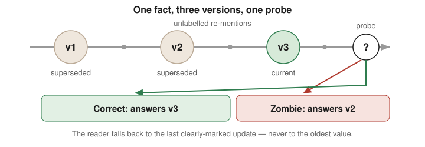
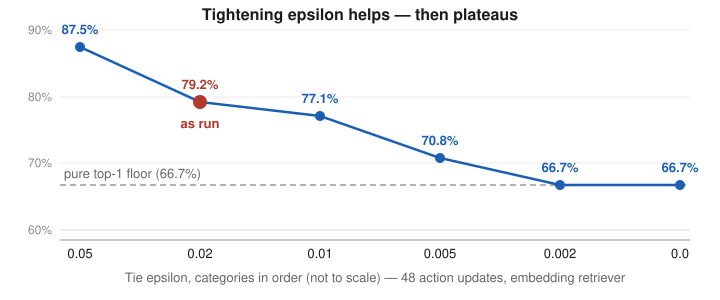

Zombie Facts
A benchmark for stale-fact susceptibility in agent memory: how often an agent acts on a superseded fact when a current replacement exists.
Memory systems are usually graded on recall. This grades the opposite failure — supersession. It is the sibling of the Compaction-Conformance Kit: the Kit measures fact survival across compaction inside a session; Zombie Facts measures fact supersession across time in persistent memory.
What it measures
The headline metric is the Zombie Rate: the share of probes where the agent acts on a dead (superseded) value although the live replacement is present in its memory. Paired recall probes split zombies into pure (the agent recalls the live value but still acts on the dead one) versus explained (it cannot recall the live value either). Only pure zombies indict the acting step rather than memory itself.

Scripted core (no model calls)
280 scenarios: 240 updates plus 40 no-update controls. Deterministic; repeated runs are byte-identical.
| Arm | Zombie rate |
|---|---|
| Retrieval (version-blind) | 50.0% |
| Raw transcript | 42.1% |
| Summary | 24.2% |
| Versioned store (supersession links) | 8.3% |
Live pilots (measured, not scripted)
Four live runs on one model class (muse-spark-1.3-contributor, temperature 0, reasoning low), all with pre-registered protocols, paired recall probes, and hard spend caps.
| Run | Scale | Raw zombie | Retrieval zombie | Versioned zombie |
|---|---|---|---|---|
| v1 pilot (Oct 28, 2026) | ~2k, single updates | 0.0% (0/96) | 50.0% | 6.3% |
| v2 hard regime (Oct 29, 2026) | ~20k, chained, unlabelled | 12.5% (6/48) | 72.9% (TF-IDF) | 6.3% |
| Varied phrasing (Oct 30, 2026) | ~20k, phrasing varied | 59.6% scored (28/47); 71.8% weak, 0/8 direct | — | — |
| Embedding retriever (Nov 1, 2026) | v2 corpus, 823 chunks | — | 78.7% (37/47) | — |
The headline result: a reader acting on a dead value is real, but only when the final update arrives weakly. Every zombie in v2 and the replication answered v2 (the most recent dead value), never v1 — the reader falls back to the last clearly-marked update. Strongly marked final updates (direct control) were never missed.
The tie story
Version-blind retrieval manufactures zombies regardless of reader quality: 50.0% in v1, 72.9% in v2 with a TF-IDF proxy, 78.7% with a local embedding retriever. A versioned store with supersession links nearly eliminates them (6.3% in both pilots). The embedding headline is close to TF-IDF's, so the proxy is validated on the headline — but the failure composition differs: embedding failures are mostly ties. The reader adds almost no error of its own (faithful to the retrieved chunk in 106/107 responses, zero reader-introduced zombies).
Re-applying the tie rule at other epsilons from the saved rankings (the counterfactual) shows tightening helps monotonically, and the earliest-index tie-break only ever hurts — the plant chunk is the oldest, so earliest-index systematically favours the zombie. But it does not fix the headline: even pure top-1 is 66.7% dead. The tie-break accounts for 6 of the 38 as-run dead choices; the remaining 32 are confident misrankings.

| Tie epsilon | Retrieval dead rate |
|---|---|
| 0.05 | 87.5% (42/48) |
| 0.02 (as run) | 79.2% (38/48) |
| 0.01 | 77.1% (37/48) |
| 0.005 | 70.8% (34/48) |
| 0.002 | 66.7% (32/48) |
| 0.0 (pure top-1) | 66.7% (32/48) |
Rule: the clear-win-only figure must never be reported without its epsilon. At 0.02 it is 27.7% (scored answers), below TF-IDF's 47.9%; at 0.002 it rises to 72.9% of choices, above it.
What this does not establish
Rates for other models, other scales, prose (non exact-value) answers, or production embedding retrievers — the TF-IDF retriever here is a documented proxy, not a production index, and the embedding pilot used one small local model, not a hosted embedder or a production store. The per-phrasing rates are presence/absence screens at n=8, not precise rankings.
Reproduce it
The scripted core and all gates run offline with no key. The live pilots are documented step by step, including their caps and protocols, so the numbers above can be re-derived rather than taken on trust.